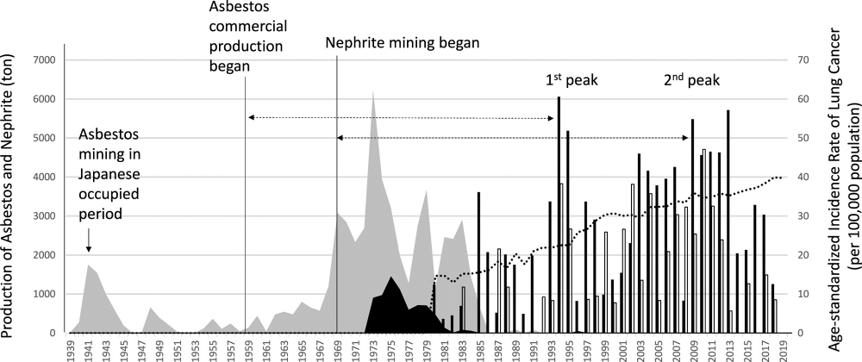
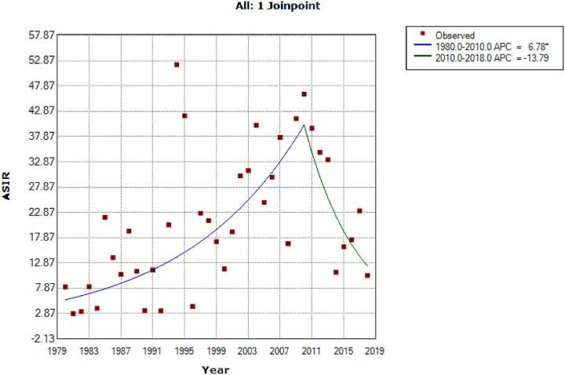
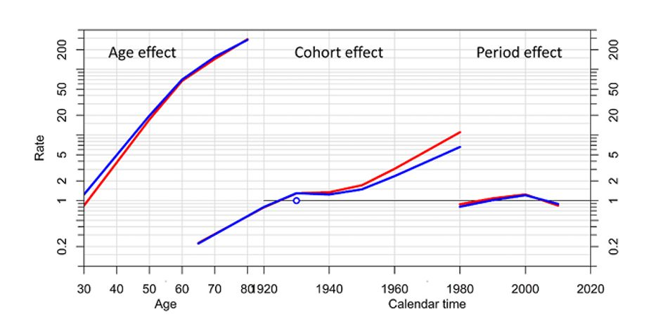
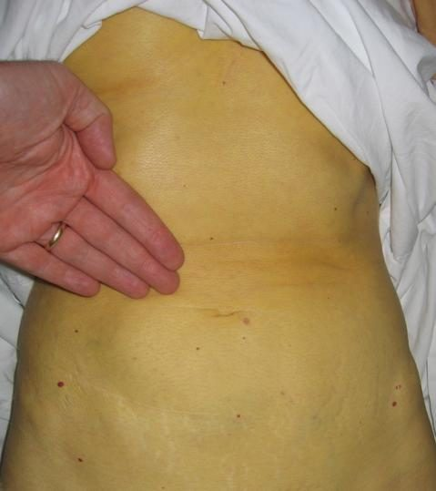
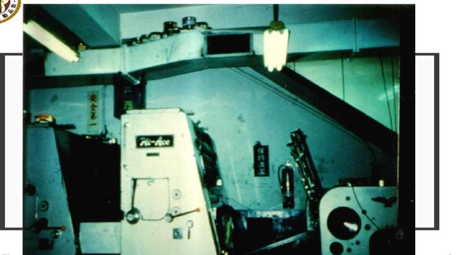
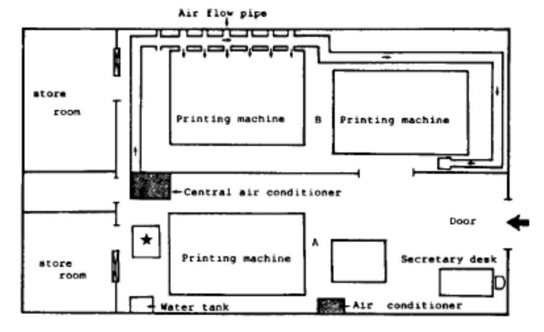
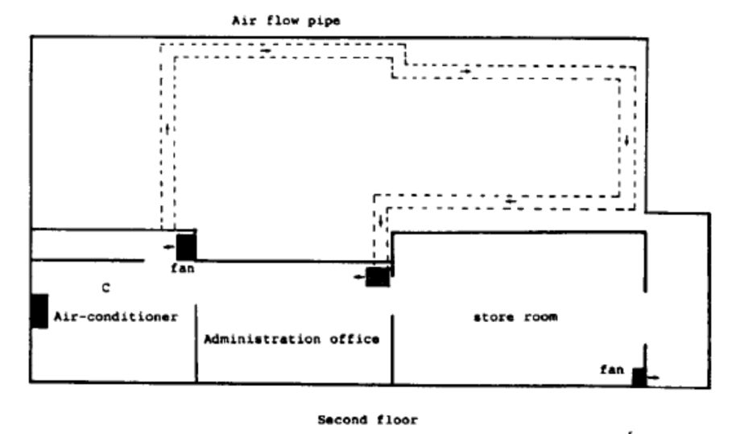
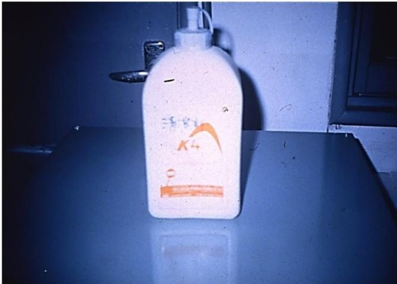
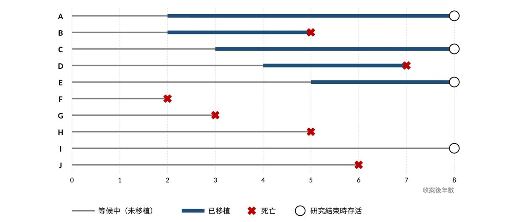

00期中考重點整理
範圍 01–07 共 7 章，以今年講義為準。今年新教＝去年講義沒有；說法改變＝兩年寫法不同，考試照今年。每個題組下方的「詳解・批改」會把題目與你的作答送給 Claude 批改。
各章一句話與必背數字
01職業流病・群聚 今年新教
- 三目的：建立因果、找高危險族群、介入改善
- 臺灣玉六步驟：訪視→危害辨識→環境測定→疾病診斷→篩檢→介入；aOR 2.9（0.9–9.2）
- 群聚＝時間＋地點的異常聚集；人、地、時
- 勞職保法 §73 非強制通報 vs 職安法 §37 重大職災 8 小時強制通報
- 通報資料五限制：低通報、差別通報、選擇、延遲、資訊偏差
02JEM
- JEM＝職業 × 危害因子（× 時期）指派群體暴露估計
- P 暴露比例、L 暴露者平均程度；E＝P×L；CE＝Σ E×年數
- 等級分數只能叫「累積暴露分數」，不是濃度倍數
- 通用型 vs 特定型只是範圍不同 說法改變
- MCC-Spain：aOR 1.09（0.92–1.29），無劑量效應；5 年 lag ≠ 潛伏期
03長期趨勢
- 直接標準化 ASR＝Σwᵢrᵢ；例題粗率 95.8→125.6，ASMR 124.3→101.7
- APC＝100(e^β−1)；AAPC 依區段長度加權 β，不是平均 APC
- APC 識別問題：世代＝年代－年齡；Poisson＋offset log(PY)
- NCI 工具只吃病例數＋人年；輸出 net drift、local drifts、period／cohort RR
- 豐田：net drift 4.04%；Joinpoint 2010 轉折
04地區 APC 今年新教
- CRIS 有五歲年齡層→做 APC；資料集 6399 只有逐年率→做 Joinpoint
- PY＝所有癌症病例 ÷ 所有癌症率 × 10⁵
- NCI 三錯誤：納入 85+、貼上率、起始年齡太低
- 零格 > 三成只看 net drift 與中段世代
- 肝癌世代反轉 ↔ B 肝疫苗 1984／1986
05監測・橫斷
- Surveillance ≠ cross-sectional：監測沒有非暴露組
- 盛行率 ≈ 發生率 × 病程；評估風險用發生率
- PR＝[a/(a+b)]÷[c/(c+d)]；OR＝ad/bc
- 干擾三條件；處理 MMRRSS；Hill 時序性為唯一必要條件
06世代・人年・SMR
- 回溯性世代仍是由暴露往疾病
- 風險人年三步驟：累計到事件或結束、扣潛伏期、排除暴露不足
- SMR＝O/E；E＝Σ 研究族群各層人年 × 參考族群各層率
- 健康工人效應：中藥 SIR 0.86；礦工肺結核 SMR 241
- 不同職業的 SMR 不宜直接比較
07存活分析
- 2/11 對 1/9 是 IRR＝1.64，不是 RR 說法改變
- Life table 5 年存活 0.088；KM 0.833→0.625→0.417→0
- HR＝e^β；比例風險假設＝HR 不隨時間變
- 不死偏差＝人時錯誤分類；方向一定偏向「需先存活才能進入」的組
- 心臟移植 MRR：0.33 → 0.60 → 1.00
兩年說法不同（以今年為準）
| 章 | 今年 | 去年 |
|---|---|---|
| 02 | 特定型與通用型 JEM 只是適用範圍不同，不宜推論特定型必然較優 | 特定型 JEM 通常優於通用型 |
| 05 | Hill 第 6 項：排除其他解釋因素 | 考慮干擾因子影響 |
| 07 | 2/11 對 1/9 是發生率比（IRR） | 放在 RR 公式頁 |
今年新教、去年沒教
| 章 | 內容 |
|---|---|
| 01 | 職業流病定義、臺灣玉六步驟、群聚調查、§73 對 §37、通報資料五項限制 |
| 02 | 指標表與 CE 公式、建構細節（編碼、LOD、盲性、SEG）、Pukkala、MCC-Spain 結果判讀、信效度；PBL 造船業 |
| 03 | ASR 公式、APC 公式、AAPC 算法、Poisson offset、NCI 工具輸出；PBL 豐田 |
| 04 | 整章 |
| 05 | Surveillance 定義、統計方法一覽、盛行率 ≈ 發生率 × 病程；PBL 急性肝炎 |
| 06 | 礦工 SMR 241、SMR 不可互比、健康工人效應減少法、偏差例子、干擾處理；PBL PVC |
| 07 | IRR 區分、設限錯誤做法、Hazard／HR、比例風險假設、不死偏差方向；PBL 心臟移植 |
去年有教、今年沒有
| 章 | 內容 |
|---|---|
| 02 | 張火炎矽 JEM（PEP、PPE 分數、EI 連乘）、多重暴露、JEM 比較表、Delphi、資料品質排序、WBGT 門檻 |
| 03 | 各國粗率對 ASR、肺癌政策 Joinpoint、廣島／攝護腺癌／女性勞動例、七種模型 AIC／BIC、西班牙中風 APC |
| 05 | MMRRSS 清單、勞工健檢頁 |
| 07 | 假設二（早晚收案存活相同）、奧斯卡得主例、case-cohort、夜班研究全表、R 實作 |
公式總整理
各週「觀念與公式」的精簡版；代號定義與推導請看各週分頁。青色＝PBL 題目有用到，右欄標出題號。
| 章 | 公式 | 說明 |
|---|---|---|
| 02 | E ＝ P × L | 職務群體平均濃度；P＝暴露人數 ÷ 調查人數，L＝暴露者平均濃度W2 第 6–7 題 |
| 02 | CE ＝ Σ ( Cj × Dj ) ＝ Σ ( Pj × Lj × Dj ) | 累積暴露（mg/m³·年）：各段工作「濃度 × 年數」加總W2 第 10 題 |
| 03 | ri ＝ 病例數 ÷ 人年 × 105 | 年齡別率W3 第 5 題、W4 第 7 題 |
| 03 | ASR ＝ Σ ( wi × ri )，wi ＝ Si ÷ ΣSi | 直接年齡標準化；權重取自標準人口 |
| 03 | APC ＝ 100 × ( eβ − 1 ) | Joinpoint 年度百分比變化；β＝ln（率）的年斜率W3 第 11、16 題（判讀） |
| 03 | AAPC ＝ 100 × { exp[ Σ(Ljβj) ÷ ΣLj ] − 1 } | 依各段年數加權平均斜率再換算；不是 APC 的算術平均 |
| 03 | c ＝ p − a | 出生世代 ＝ 年代 − 年齡（APC 的識別問題）W3 第 8 題、W4 第 10、18、27 題 |
| 03 | log μ ＝ log PY ＋ α ＋ A(a) ＋ P(p) ＋ C(c) | APC Poisson 模型；log PY 為 offset，只能輸入病例數與人年W3 第 22–23 題、NCI 上機 |
| 03 | ΔDev ＝ Dev簡單 − Dev複雜；Δdf 同理 | 巢狀模型比較：ΔDev 對 Δdf 做卡方檢定W3 第 24–25 題 |
| 04 | PYi ＝ Di(all) ÷ ri(all) × 105 | 用「所有癌症」病例數與率反推人年 |
| 04 | 合併率 ＝ ΣD ÷ ΣPY × 105 | 合併組距或男女：先加總病例與人年再算率 |
| 05 | PR ＝ [ a ÷ (a＋b) ] ÷ [ c ÷ (c＋d) ] | 盛行率比 |
| 05 | OR ＝ (a ÷ c) ÷ (b ÷ d) ＝ (a ÷ b) ÷ (c ÷ d) ＝ ad ／ bc | 勝算比；三種寫法等價W5 第 7、12 題 |
| 05 | 盛行率 ≈ 發生率 × 平均病程 | 疾病穩定、盛行率低時成立 |
| 06 | RR ＝ [ a ÷ (a＋b) ] ÷ [ c ÷ (c＋d) ] | 相對危險性（分母是人數） |
| 06 | 發生密度 ＝ 新發病例數 ÷ 風險人年總和 | 單位：每人年 |
| 06 | E ＝ Σ ( PYi × λi )；SMR ＝ O ÷ E | 間接標準化；PY 用扣除潛伏期與暴露不足後的風險人年W6 第 1–4、12–14 題 |
| 07 | IRR ＝ ( d1 ÷ PY1 ) ÷ ( d0 ÷ PY0 ) | 發生率比／死亡率比（MRR）；分母是人年W7 第 3、12、19、23 題 |
| 07 | Pk ＝ sk ÷ nk；S(k) ＝ P1 × … × Pk | Life table：條件存活機率連乘 |
| 07 | S(tj) ＝ Π ( 1 − dj ÷ nj ) | Kaplan-Meier：每個事件時點重算，已設限者不算入 n |
| 07 | HR ＝ eβ | Cox 模型危險比；( HR − 1 ) × 100% ＝ 危險改變百分比 |
01職業流行病學與群聚事件調查
本章講義沒有 PBL，以下為講義末「課後思考」三題。
本週觀念與名詞
名詞定義
- 職業流行病學
- 把流行病學方法用在勞工族群，研究工作場所暴露對疾病與傷害頻率、分布的影響。三大目的：建立因果關係、找出高危險族群、介入改善（一級與二級預防）。
- 群聚 cluster
- 病例在「時間」與「地點」上異常密集地聚集。
- 人、地、時
- 描述性流行病學的三個面向（person、place、time），用來回答：是否真有群聚、是否環境或職業因素造成、誰是易感族群。
- PCM
- 相位差顯微鏡（phase contrast microscopy），NIOSH 7400 方法用它計數空氣中的纖維。
- TEM
- 穿透式電子顯微鏡（transmission electron microscopy），可辨識礦物種類並看到 PCM 看不見的細纖維。
- f/cm³
- 每立方公分空氣中的纖維根數（fibers per cubic centimeter）。
- aOR
- 校正勝算比（adjusted odds ratio），已用多變項模型校正干擾因子（臺灣玉研究校正吸菸包-年與年齡）。
臺灣玉研究六步驟
- ① 現場訪視（47 次）→ ② 危害辨識（透閃石－陽起石，非石綿型態角閃石）→ ③ 作業環境測定 → ④ 疾病診斷（胸部 X 光 ILO ≥ 1/1 或聽診囉音）→ ⑤ 發展篩檢方法 → ⑥ 介入改善（BOHS、WISE 檢核表）。
- 結果：從事軟玉加工之肺纖維化 aOR 2.9（95% CI 0.9–9.2）。
- 粗磨作業 PCM 4.70 f/cm³，TEM（長度 ≥0.5 μm）24 f/cm³：TEM 可看到大量 PCM 看不見的細纖維。
兩種通報制度
| 職業傷病通報 | 重大職災通報 | |
|---|---|---|
| 法源 | 勞工職業災害保險及保護法第 73 條 | 職業安全衛生法第 37 條第 2 項 |
| 性質 | 非強制，醫療機構、雇主、勞工「得」通報 | 強制，雇主「應」於 8 小時內通報勞動檢查機構 |
通報資料用於研究的五項限制
- 低通報率、差別通報（大型醫院較常通報）、選擇性偏差（受醫院興趣影響）、時間延遲、資訊偏差（表單缺暴露歷程）。
| 採樣位置 | PCM | TEM（≥0.5 μm） | TEM（≥5 μm） | 石綿種類 |
|---|---|---|---|---|
| 切割 | 0.44 | 12.1 | 1.0 | 透閃石、陽起石 |
| 粗磨 | 4.70 | 24 | 2.9 | 透閃石、陽起石 |
| 細磨 | 0.18 | 0.098 | 0.05 | 透閃石 |
| 拋光 | <0.059 | <0.062 | <0.062 | 未檢出 |
| 區域採樣 | 0.11 | 2.1 | 0.34 | 透閃石 |
- 1若你在通報系統中發現某縣市三個月內出現多例不明原因肺纖維化，你會如何依「人、地、時」設計初步調查？
- 臺灣玉研究的 PCM 與 TEM 測值
- 2為何 PCM 與 TEM 的測值差異很大？
- 3這對暴露評估有什麼意義？
- 4若僅用通報資料推論「臺灣職業病發生率上升」，可能犯了哪些偏差？
02PBL 造船業二氧化矽暴露評估
第二章 工作暴露矩陣
本週觀念與公式
代號定義
- RCS
- 可吸入結晶型二氧化矽（respirable crystalline silica）。
- P
- 暴露盛行率＝n ÷ N，介於 0–1 的比例（百分比要先換成小數）。
- L
- 暴露程度：暴露者的平均濃度（mg/m³），等於暴露者濃度測值的算術平均。
- E
- 職務群體平均濃度：全部人員（含未暴露者）的平均濃度（mg/m³）。
- j
- 工作段的編號。一個人做過的每份工作依序記為第 1 段、第 2 段……第 j 段。
- Cj
- 第 j 段工作的濃度估計值（mg/m³）。講義的通用寫法；本 PBL 用 Ej 當作 Cj。
- Dj
- 第 j 段工作的持續期間（年）＝本題的「工作年數」。
- CE
- 累積暴露（cumulative exposure），單位 mg/m³·年。
公式一：職務群體平均濃度
- E
- 職務群體平均濃度：該職務全部人員（含未暴露者，濃度當 0）的平均，mg/m³
- P
- 暴露盛行率：該職務中有暴露的人占幾成（0–1）
- L
- 暴露者平均濃度：只平均暴露者的濃度測值，mg/m³
推導與例題
公式二：累積暴露的三種寫法其實是同一個式子
- CE
- 累積暴露：每段工作「濃度 × 年數」的總和，mg/m³·年
- Cj
- 第 j 段工作的濃度估計值（本題用該職務的 E，即 Cj ＝ Ej）
- Dj
- 第 j 段工作做了幾年
- Ej、Pj、Lj
- 第 j 段工作所屬職務的 E、P、L（見公式一）
推導與例題
- CE 是依職業群體資訊估計的累積暴露，不是這個人實際吸入多少毫克。
- L 若只是低／中／高＝1／2／3 分，乘上年資後只能稱「累積暴露分數」：3 分不等於 1 分的 3 倍濃度。
- P 與 L 回答不同問題：P × L 相同（少數人高濃度 vs 多數人低濃度）不代表個人暴露分布相同。
判讀重點
- 只看人事表職稱，會把實際有暴露的人誤分為未暴露（暴露誤分類）。
- 個人採樣與區域採樣的位置不同；短時間與全班（8-h TWA）測量的時間基礎不同，整合前要先處理可比性。
- 年資長不代表 CE 高：CE 由「濃度 × 年數」決定。
- CE 表只有暴露資料；要回答「暴露與肺癌」還需要疾病結果、追蹤人年與干擾因子資料。
一家船舶維修廠使用含結晶型二氧化矽的砂材進行噴砂。噴砂工直接操作，監工會進入作業區巡視。另有一批登記為「油漆工」的工作者，實際上也親自先噴砂處理表面，再進行油漆。以下人數、濃度與工作史均為教學設計的虛構資料。
| 職務 | 調查人數 N | 暴露人數 n | 暴露者的濃度測值（mg/m³） |
|---|---|---|---|
| 噴砂工 | 10 | 8 | 0.10、0.20、0.20、0.30、0.20 |
| 油漆工 | 10 | 10 | 0.08、0.10、0.12 |
| 監工 | 10 | 4 | 0.04、0.06 |
10 名油漆工均參與噴砂，因此都被判定為暴露者。人數用來算 P；濃度測值用來算 L。假設未暴露者的 RCS 濃度為零。
第一題 辨識暴露來源與需要的資料
- 職稱與實際作業
- 1三種職務可能如何接觸 RCS？
- 2若研究者只看人事表上的「油漆工」職稱，就將他們列為沒有 RCS 暴露，會漏掉什麼作業？
- 3這會使其暴露估計偏高或偏低？
- 採樣與工作史
- 4若要了解工作者吸入的 RCS 濃度，應優先採取工作者呼吸帶的個人空氣採樣，還是只在廠房門口放一台固定採樣器？
- 5除了濃度，還需記錄哪兩項工作史資料，才能計算 CE？
第二題 將調查資料整理成 JEM
6計算三種職務的 P 與 L；7計算 E，完成下表。
| 職務 | P＝n÷N | L（mg/m³） | E＝P×L（mg/m³） |
|---|---|---|---|
| 噴砂工 | |||
| 油漆工 | |||
| 監工 |
- 8哪種職務的群體平均濃度（E）較高？
- 9這是否代表該職務每個人的濃度都相同？
第三題 連結工作史與累積暴露
可直接使用：噴砂工 E＝0.160、油漆工 E＝0.100、監工 E＝0.020 mg/m³（職務群體估計值，非個人實測）。CE＝Σ（Ej × 工作年數 Dj）。
| 工作者 | 工作史 | CE（mg/m³·年） |
|---|---|---|
| 甲 | 噴砂工 10 年 | |
| 乙 | 監工 20 年 | |
| 丙 | 油漆工 5 年，再任監工 5 年 |
- 排序與年資
- 10把三人的 CE 依高至低排序。
- 11工作年數較長的人，CE 是否一定較高？
- 公司想知道「累積暴露較高的人，肺癌發生率是否較高」
- 12只靠這張 CE 表能回答嗎？
- 13還需要哪些資料？
參考數字（依講義資料自行計算，非官方答案）
噴砂工 P＝8/10＝0.8，L＝(0.10+0.20+0.20+0.30+0.20)/5＝0.20，E＝0.16；油漆工 P＝1.0，L＝0.10，E＝0.10；監工 P＝0.4，L＝0.05，E＝0.02。
CE：甲 0.16×10＝1.6；丙 0.10×5＋0.02×5＝0.6；乙 0.02×20＝0.4。
03PBL 石綿礦停採後，肺癌風險還在上升嗎
第二章 環境對健康影響的長期趨勢分析
本週觀念與公式
代號定義
- i
- 年齡層編號（例如 30–39 歲為一層）。
- Di
- 第 i 年齡層的病例數（人）。
- PYi
- 第 i 年齡層的人年（person-years）：每人被觀察 1 年算 1 人年。
- ri
- 第 i 年齡層的年齡別率（每十萬人年）。
- Si
- 標準人口第 i 層的人數（例：WHO 2000 世界標準人口，或兩期人口合併）。
- wi
- 第 i 層的權重＝Si ÷ ΣSi，所有權重加起來＝1。
- ASR
- 年齡標準化率（age-standardized rate）；發生用 ASIR，死亡用 ASMR。
- t
- 年份。
- α、β
- Joinpoint 迴歸的截距與斜率；β＝ln（率）每年的變化量。
- APC
- 年度百分比變化（annual percentage change）：某一段趨勢中，率平均每年變化幾 %。注意：與「年齡－年代－世代（APC）分析」同名不同義。
- Lj、βj
- AAPC 公式中：第 j 段 Joinpoint 區段落在指定期間內的年數、該段斜率。
- AAPC
- 平均年度百分比變化（average annual percentage change）。
- a、p、c
- 年齡（age）、年代（period，診斷年份）、出生世代（cohort）。
- μap
- 年齡 a、年代 p 那一格模型預期的病例數。
- A(a)、P(p)、C(c)
- 年齡效應、年代效應、世代效應。
公式一：直接年齡標準化
- ri
- 第 i 年齡層的年齡別率，每十萬人年
- wi
- 第 i 層的權重，取自標準人口（例：WHO 2000），所有層加起來＝1
- ASR
- 年齡標準化率：假設年齡結構和標準人口一樣時的率（發生 ASIR、死亡 ASMR）
推導與例題
公式二：Joinpoint 的 APC
- ratet
- 第 t 年的率（通常用年齡標準化率）
- β
- 斜率：ln（率）每年增加多少
- APC
- 年度百分比變化：該段趨勢中，率平均每年變化幾 %
推導與例題
公式三：AAPC（不是 APC 的算術平均）
- AAPC
- 指定期間內的平均年度百分比變化
- Lj
- 第 j 個 Joinpoint 區段落在指定期間內的年數（不是 JEM 的 L）
- βj
- 第 j 段的斜率
推導與例題
公式四：年齡－年代－世代（APC）模型
- c
- 出生世代（cohort）
- p
- 年代（period）：診斷或死亡年份
- a
- 年齡（age）
- Dap
- 年齡 a、年代 p 那一格觀察到的病例數
- μap
- 該格模型預期的病例數
- PYap
- 該格人年；log PY 是 offset（係數固定 1），讓模型描述的是率
- A(a)、P(p)、C(c)
- 年齡效應、年代效應、世代效應
推導與例題
本 PBL 的單位陷阱
說明
NCI 工具輸出
代號定義
- Net drift
- 整體疾病率的平均年度百分比變化。
- Local drifts
- 各年齡層的平均年度百分比變化。
- Period RR
- 相對於參考年代的率比。
- Cohort RR
- 相對於參考出生世代的率比。
- Long. age curve
- 控制年代與世代後，疾病率隨年齡的變化。
- Wald 檢定
- 檢定某組參數是否全為 0（例：All Period RR＝1）；X² 越大、P 越小越顯著。
公式五：模型比較（表 2-3）
- Dev
- Deviance（離差）：模型與資料的差距，越小越貼近資料
- df
- 殘差自由度
- 簡單／複雜
- 參數較少的模型（例：Age）／多加一組效應的模型（例：Age ＋ drift）
- Deviance ÷ df ≈ 1：Poisson 變異假設大致合理；明顯 > 1：可能過度離散。AIC／BIC 越小越好。
- ΔDev 與 χ²（自由度 Δdf）比較即概似比檢定；α＝0.05 時 χ² 臨界值：df 1＝3.84、df 2＝5.99、df 3＝7.81。講義外補充
- 模型適配好 ≠ 因果關係；NCI 網頁工具只給 Wald 檢定，跑不出這張 deviance 表（表 2-3 來自 R Epi 套件）。
豐田是一個曾開採石綿的社區，情境指定 1954 年開始、1985 年停止石綿開採，並於 1970–1980 年間轉向臺灣玉（nephrite）相關產業。地方衛生單位注意到肺癌通報數波動，希望評估過去與殘留暴露對長期健康的影響。學習任務是提出可執行的調查方案，並判讀下列資料。

- 1能否判斷肺癌較可能由石綿或臺灣玉開採造成？
- 2需要哪些額外資料來區分兩種產業的影響？
任務一、年齡與年代矩陣（以病例數與人口數判讀）
來源：Yang HY, Furuya S, Toyama N. J Formos Med Assoc 2024;123(7):796–801, Table 1。表列「人口數」為該期的人口數，非人年。
- 3先只看病例數，指出哪一格最多、哪一格為零。
- 4對照同一格的人口數，說明為什麼「病例數多」不等於「風險高」。
- 5自行計算至少三格的發生率（病例數 ÷ 人口數 × 100,000）：
- 6列出一組直向比較（同一年代、不同年齡）。
- 7列出一組橫向比較（同一年齡、不同年代）。
- 8列出一條對角線（近似同一出生世代）。
- 9哪些結論不能由此表確認？
任務二、停採後的趨勢：Joinpoint 迴歸判讀

- 10轉折點在哪一年？
- 11兩段 APC：1980–2010 %／年；2010–2018 %／年
- 12兩段 APC 各表示什麼？
- 131985 年停採後的趨勢如何描述？
- 14下降段是否能判定為顯著下降？
任務三、NCI（NIH）APC 網頁工具上機實作
工具網址：analysistools.cancer.gov/apc。左上選「Copy and Paste Data」，在「Paste Here」貼上下列 6 列（每列：第 1 期病例數、第 1 期人口數、第 2 期……）。Start Year 1980、Start Age 30、Interval 10，Reference 保持 Default，按 Calculate。
0 26185 2 33621 2 29020 1 24615 1 22287 0 23984 5 31421 4 26922 5 25914 11 20927 9 23598 23 31747 16 20412 20 20300 17 18660 19 22218 5 7505 19 12321 41 15006 23 14061 0 1567 4 3457 25 6288 27 9230
0 14623 1 19899 0 16651 1 13530 0 11540 0 13135 4 18254 4 15217 5 16541 8 10787 5 12750 17 17770 14 14575 15 12015 10 9425 10 11869 4 4338 16 8100 29 8526 16 6668 0 736 2 1908 17 3854 18 4565
0 11562 1 13722 2 12369 0 11085 1 10747 0 10849 1 13167 0 11705 0 9373 3 10140 4 10848 6 13977 2 5837 5 8285 7 9235 9 10349 1 3167 3 4221 12 6480 7 7393 0 831 2 1549 8 2434 9 4665
學生作答表
| 輸出項目 | 工具中的位置 | 填入數值 | 判讀重點 |
|---|---|---|---|
| Net Drift（%/年）與 95% CI | 左欄 Net Drift | CI 是否含 0 | |
| NetDrift = 0 的 Wald 檢定 | 左欄 Wald Tests | X²、df、P 值 | |
| All Period RR = 1 | 左欄 Wald Tests | 年代效應整體是否顯著 | |
| All Cohort RR = 1 | 左欄 Wald Tests | 世代效應整體是否顯著 | |
| Local Drifts（各年齡） | Local Drifts 分頁 | 哪些年齡層的趨勢與整體不同 | |
| Longitudinal Age Curve | Long Age 分頁 | 控制年代與世代後的年齡曲線 | |
| Period Rate Ratios | PeriodRR 分頁 | 以 1995 年為參考的年代相對率 | |
| Cohort Rate Ratios | CohortRR 分頁 | 哪一出生世代最高？CI 多寬？ |
- Net Drift
- 15Net Drift 的點估計與信賴區間各代表什麼？
- 16它與 Joinpoint 估計的 APC = 6.8%／年為何不同？
- Cohort Rate Ratios
- 17最高的是哪一出生世代？
- 18它的 95% 信賴區間有多寬？
- 19這個區間允許你下什麼樣的結論、不允許下什麼樣的結論？
- 把表 2-2 的男性資料單獨貼進工具再跑一次，與合計結果比較
- 20哪些結論維持一致、哪些改變？
- 21這是否足以宣稱男女風險不同？
- 工具要求「病例數＋人口數」而不能輸入發生率。若手上只有表 2-1 換算後的率
- 22你還能做什麼分析？
- 23不能做什麼分析？
講義提供的檢核點
以表 2-1 資料執行後，應與論文一致：net drift 4.04%（95% CI 0.94–7.24）、period Wald X² = 10.87（df = 3）、cohort Wald X² = 21.78（df = 8）。
任務五、模型適配（次模型比較）
| 模型 | Deviance | 殘差 df | Deviance／df |
|---|---|---|---|
| Age | 58.00 | 20 | 2.90 |
| Age + drift | 34.31 | 19 | 1.81 |
| Age + cohort | 25.71 | 16 | 1.61 |
| Age + period | 25.88 | 17 | 1.52 |
| Age + period + cohort | 19.02 | 14 | 1.36 |
表 2-3 來源：Yang HY et al. J Formos Med Assoc 2024, Table 2（R 的 Epi 套件）。講義任務編號由任務三直接跳到任務五。
24計算離差差值與自由度差：
| 比較 | ΔDev | Δdf |
|---|---|---|
| Age → Age + drift | ||
| Age + drift → Age + cohort | ||
| Age + drift → Age + period | ||
| Age + cohort → APC |
- 25加入漂移、世代與年代後，適配是否改善？請用離差差值與自由度差舉例說明。
- 26「模型適配良好」與「存在因果關係」有何不同？
- 27網頁工具為什麼跑不出這張表？
任務六、世代曲線與暴露時間

閱讀你自己跑出的 CohortRR 分頁（並對照圖 2-1）。
- 28哪些年齡、出生世代與年代的估計值較高？
- 29原教材將 1970–1980 年出生世代標為高值，這能否直接說明其受石綿影響最大？請討論模型限制、年輕世代的追蹤時間、停採當時的年齡，以及信賴區間的寬度。
04PBL 選你關心的地區與癌別
第三章 臺灣癌症登記資料的地區年齡－年代－世代分析
本週觀念與公式
代號定義
- CRIS
- 國健署癌症登記線上互動查詢系統：鄉鎮層級、18 個五歲年齡層，只給率不給人口 → 做 APC。
- 資料集 6399
- 政府資料開放平臺「癌症發生統計」：縣市逐年、無年齡層 → 做 Joinpoint。
- i
- 年齡層編號（同一地區、同一期、同一性別）。
- Di(all)
- 第 i 層「所有癌症」的病例數。
- ri(all)
- 第 i 層「所有癌症」的年齡別率（每十萬，系統顯示到小數第二位）。
- PYi
- 第 i 層的人年（多年合併時＝各年年底人口數加總）。
- 率
- 本章一律指每十萬人年＝病例數 ÷ 人年 × 100,000。
公式一：人年反推
- PYi
- 第 i 年齡層的人年（要反推的分母）
- Di(all)
- 該層「所有癌症」的病例數
- ri(all)
- 該層「所有癌症」的年齡別率，每十萬
推導與例題
公式二：合併組距或男女合計
- 先把病例數、人年各自加總再算率，不能把幾個率平均（各格人年不同，平均會給小格過大的權重）。
公式三：對角線＝近似出生世代
推導與例題
NCI 工具與稀疏資料
- 輸入：每列一個年齡層，「病例數、人年」成對；Start Year、Start Age、Interval（年齡與年代組距必須同寬）。
- 三個常見錯誤：① 納入 85+（開放組被當成 85–89，建議結束於 84）② 貼上率 ③ 起始年齡太低（0–29 歲零格多）。
- 零病例格 > 三成 → 只解讀 net drift 與中段世代；最小人年 < 數千 → 標準誤太大。
- 輸出名詞（net drift、local drifts、period／cohort RR、Wald 檢定）同第 03 週。
判讀與限制
- 年代效應＝所有年齡一起變；世代效應＝特定出生世代帶著變。Joinpoint 與 APC 都只是提出假說的起點。
- 非暴露解釋：1995 年前登記完整性低、行政區劃、戶籍地 ≠ 暴露地、子宮頸癌不含原位癌、篩檢與影像（攝護腺、甲狀腺、乳癌）。
- B 肝疫苗：1984 年 7 月（帶原母親新生兒）、1986 年 7 月（全面）。
某縣衛生局希望知道轄區內哪一種癌症的長期趨勢與全國不同、是不是特定年齡層或出生世代在上升，並判斷這能否與地方的環境或職業暴露史連結。你們小組被要求先用公開的癌症登記資料做一次初步分析，再提出需要哪些資料才能往下走。
開始前請先討論並寫下：
- 1要看的地區層級與地區。
- 2癌別與性別。
- 3為什麼是這個組合，背後的暴露假說是什麼？
- 4預期矩陣會多稀疏？
任務一、全國女性肺癌的矩陣判讀（表 3-1）
- 5先只看病例數：哪一格最多？
- 6病例數最多的年齡層在四個年代之間如何移動？
- 7對照同一格的人年，自算至少三格的率（每十萬人年）：
- 8列出一組直向比較（同一年代、不同年齡）。
- 9列出一組橫向比較（同一年齡、不同年代）。
- 10列出一條對角線：30–39 歲於 1979–88 → 40–49 歲於 1989–98 → 50–59 歲於 1999–2008 → 60–69 歲於 2009–18（近似 1940–1958 年出生世代）。
- 11從表中能不能區分「每一世代都在上升」與「愈晚出生的世代率愈高」？
任務二、NCI APC 網頁工具上機：全國女性肺癌
261 12850846 445 18206739 718 18488788 1028 19293120 670 8544343 1336 12609890 2758 18052317 4458 18617280 1477 6584987 2332 8230826 4677 12275956 11381 17805771 1767 4110405 3725 6009457 6598 7646792 14357 11788518 917 2104966 3451 3173116 7777 4901648 12633 6602174
294 13479236 581 18950439 735 18922309 981 19121080 1028 9011983 1578 13033494 3233 18365399 4540 18359050 4335 8694489 4493 8362676 6999 12176416 12883 17323708 6443 5437570 11440 7407731 13109 7228771 19370 10962765 2934 2104085 10222 3785634 21086 5411192 21760 5580615
工作台選「全國」、「肺、支氣管及氣管癌」、「女性」，組距 5 年、30–84 歲、1979–1983 至 2019–2023，按「複製（貼上 NCI）」，到 NCI 工具貼上，Start Year 1979、Start Age 30、Interval 5，Reference 保持 Default。
表 3-4 學生作答表
| 輸出項目 | 工具中的位置 | 填入數值 | 判讀重點 |
|---|---|---|---|
| Net Drift（%/年）與 95% CI | 左欄 Net Drift | CI 是否含 0 | |
| NetDrift = 0 的 Wald 檢定 | 左欄 Wald Tests | X²、df、P 值 | |
| All Period Deviations = 0 | 左欄 Wald Tests | 扣除線性趨勢後，年代是否仍有非線性變化 | |
| All Cohort Deviations = 0 | 左欄 Wald Tests | 扣除線性趨勢後，世代是否仍有非線性變化 | |
| Local Drifts（各年齡） | Local Drifts 分頁 | 哪些年齡層的年變化與整體不同；正負號 | |
| Period Rate Ratios | PeriodRR 分頁 | 以參考年代為 1 的相對率 | |
| Cohort Rate Ratios | CohortRR 分頁 | 最高與最低的出生世代；CI 寬度；邊界世代 | |
| Longitudinal Age Curve | Long Age 分頁 | 控制年代與世代後的年齡曲線 |
- Net Drift
- 12Net Drift 的點估計與信賴區間各代表什麼？
- 13它與工作台年齡標準化率曲線的斜率有什麼關係、又為什麼不完全一樣？
- Wald 檢定
- 14Period Deviations 與 Cohort Deviations 的 Wald 檢定，哪一個顯著、哪一個不顯著？
- 15這告訴你變化主要是「所有年齡一起動」還是「特定世代帶著動」？
- Cohort Rate Ratios
- 16最高的是哪一出生世代？
- 17它的 95% 信賴區間有多寬？
- 18這個世代在 2023 年幾歲、在矩陣裡由幾格支持？
- 把「男性」再跑一次
- 19男性的 net drift 與世代曲線和女性有何不同？
- 20臺灣女性吸菸率長期低於 5%，這對解讀女性肺癌的世代上升有什麼含意、又不能推論什麼？
任務三、地區比較：花蓮縣肺癌（表 3-2）
花蓮縣 1979–1983 年五年間肺癌合計 152 例，2019–2023 年 1,120 例；請先想想這 7 倍的增加中，人口老化、登記完整性與真實風險各占多少。
5 435777 15 572889 26 545212 24 504525 47 323456 37 411693 77 539435 122 516603 120 333261 111 298464 163 385082 320 516094 174 233100 275 276667 283 256586 427 346792 78 98077 300 154940 516 194729 496 196986
555 26329841 1026 37156731 1453 37410846 2009 38414205 1698 17556335 2914 25643625 5991 36417715 8998 36976428 5812 15279532 6825 16593481 11676 24452345 24264 35129436 8210 9547983 15165 13417172 19707 14875507 33727 22751328 3851 4209068 13673 6958739 28863 10312863 34393 12182802
- 21比較花蓮與全國（合計）的 net drift 與信賴區間寬度、零病例格比例、最小人年。
- 22花蓮的世代曲線在哪些世代開始變得不穩定？
- 23如果只看花蓮的點估計，你會下什麼結論？
- 24加上信賴區間之後呢？
任務四、世代效應的反轉：全國肝癌（表 3-3）
臺灣自 1984 年 7 月起對 B 型肝炎帶原母親的新生兒、1986 年 7 月起對所有新生兒接種 B 肝疫苗。
1674 26328778 3177 37156260 4238 37410998 2626 38414175 3075 17556315 6656 25643503 12233 36417703 9770 36976032 5936 15279513 11489 16593450 21271 24452380 25148 35129387 4869 9548014 14897 13417174 27577 14875539 32759 22751304 1848 4209061 9129 6958760 24251 10312844 29451 12182794
- 25看 CohortRR 分頁：相對率在哪一出生世代最高、之後如何變化？
- 26看 Local Drifts 分頁：哪些年齡層的年變化為負？
- 271984–1986 年出生者在 2019–2023 年約幾歲？
- 28對照世代曲線與 local drifts 轉負的年齡，說明資料與疫苗假說相容之處。
- 29還不能排除的其他解釋有哪些（C 型肝炎治療、飲酒、黃麴毒素管制、篩檢與診斷改變）？
任務五、自選地區與癌別
每組選一個縣市或鄉鎮、一個癌別、一個性別（或合計），寫下暴露假說後再開始。跑 NCI 工具，填一份表 3-4，與同癌別的全國結果並列。
建議題材：高雄臨海工業區鄉鎮（前鎮、小港、林園、大寮）的肺癌與肝癌；臺南北門、學甲與雲林、嘉義沿海的膀胱癌與腎癌；彰化和美、伸港的皮膚癌與膀胱癌；花蓮秀林、新城、壽豐的肺癌；桃園觀音的口腔癌與肺癌。
0 26185 2 33621 2 29020 1 24615 1 22287 0 23984 5 31421 4 26922 5 25914 11 20927 9 23598 23 31747 16 20412 20 20300 17 18660 19 22218 5 7505 19 12321 41 15006 23 14061 0 1567 4 3457 25 6288 27 9230
- 30選定的地區、癌別、性別與暴露假說。
- 31一項可支持的發現。
- 32兩項限制。
- 33下一步需要的資料。
任務六、從 APC 到暴露假說
- 34你觀察到的是年代效應、世代效應，還是兩者都有？依據是哪個輸出？
- 35若是世代效應，高風險世代在假設的暴露年份時幾歲？這與已知的暴露途徑（職業、居住、飲食、母嬰）是否相容？
- 36若是年代效應，有哪些非暴露的解釋（篩檢、診斷、通報、編碼）必須先排除？
- 37要驗證假說，最少需要哪三種資料，各從哪裡取得？
05PBL 職業性急性肝炎調查
工作者健康監測與橫斷型研究
本週觀念與公式
代號定義
- E(+)、E(−)
- 有暴露、無暴露（本 PBL：印刷部門、非印刷部門）。
- D(+)、D(−)
- 有病、無病（本 PBL：第 10 天 ALT ＞ 40 U/L 為肝功能異常）。
- a
- 有暴露且有病的人數。
- b
- 有暴露但無病的人數。
- c
- 無暴露但有病的人數。
- d
- 無暴露且無病的人數。
- odds（勝算）
- 某事發生數 ÷ 不發生數（例：暴露組有病的勝算＝a ÷ b）；和「比例」a ÷ (a＋b) 不同。
- PR
- 盛行率比（prevalence ratio）。
- OR
- 勝算比（odds ratio）。
- HBsAg
- B 型肝炎表面抗原，陽性＝B 肝帶原。
| D(+) 有病 | D(−) 無病 | 合計 | |
|---|---|---|---|
| E(+) 有暴露 | a | b | a＋b |
| E(−) 無暴露 | c | d | c＋d |
公式一：盛行率比
- PR
- 盛行率比
- a ÷ (a＋b)
- 暴露組的盛行率
- c ÷ (c＋d)
- 無暴露組的盛行率
公式二：勝算比的兩種寫法相等
- OR
- 勝算比
- a ÷ c、b ÷ d
- 有病者、無病者的暴露勝算
- a ÷ b、c ÷ d
- 暴露組、無暴露組的有病勝算
推導與例題
公式三：盛行率與發生率
推導與例題
- 評估風險、探討病因用發生率；疾病負擔、規劃醫療用盛行率。
干擾因子與分層分析
- 干擾因子 C 的三條件：① 與暴露 A 相關 ② 是疾病 B 的危險因子 ③ 不在 A→B 的因果路徑上。
- 處理方法 MMRRSS：多變項迴歸、配對、隨機分派、限制、分層、標準化。
- 分層判讀：各層 OR 彼此相近、但與未分層 OR 差很多 → 干擾；各層 OR 彼此差很多 → 交互作用（效應修飾），不該合併成單一 OR。講義外補充
Hill 因果準則
- 強度、一致性、時序性（唯一必要條件）、生物合理性、劑量效應、排除其他解釋、停止暴露風險下降、專一性。
1985 年 8 月，三名患者被轉診至 A 醫院，主訴為全身不適、噁心、嘔吐、頭暈，並且連續數日排出茶色尿液，其中一人還出現少尿的情形。社區醫院所做的肝功能檢查顯示，他們的 ALT 升高到正常值的十倍。經過職業史的詢問之後，醫師發現這三名患者來自同一個印刷工廠。病人的臨床診斷為急性肝炎，身體檢查可見明顯的黃疸。

任務 1 描述疫情分布與辨識高風險群
- 1資料收集：工作現場訪視的目的是要蒐集哪些資料？
- 2分布分析：請使用「人、事、時、地、物」的框架，描述疾病在工廠內的分布情況。
- 3高風險群體識別：根據分析的結果，辨識工廠內的高風險群體。
一樓設有兩台印刷機、儲藏室、中央空調與水槽，二樓則是辦公室、空調與儲藏室。工人用來清洗管路的清潔劑以桶裝盛放，桶身沒有完整的標示。




調查人員向工廠索取該清潔劑的物質安全資料表，但工廠無法提供。
彩色印刷工廠為了去除色料，一般是使用異丙醇來清洗印刷機。異丙醇可以靠幫浦和管路回收再使用，但是回收的管路大約一到兩個月就容易堵塞，這時就需要靠清潔劑來清洗管路。工人表示這種清潔劑非常好用，只要倒進去，管路就通了。這次住院的三個工人都是清洗管路的直接操作者。工廠的員工回憶，大約每一到兩個月有一次，在使用清潔劑之後，就會有一兩個工人因為肝炎發作而住院。
任務 2 選擇適當的研究設計
- 4工廠急性肝炎爆發的第一時間，您的假設是什麼？
- 5您要用什麼研究設計來驗證職業危害的相關性？是 cross-sectional study、case-control study，還是 cohort study？請說明原因。
於爆發後第 10 天與第 20 天為 19 位員工抽血檢查肝功能，並檢驗 HBsAg。本案例以 ALT > 40 U/L 定義為肝功能異常。灰字為非印刷部門。
任務 3 整理資料並計算勝算比
6依發病第 10 天的檢查結果，製作 2×2 表：
| 肝功能異常 D(+) | 無肝功能異常 D(−) | |
|---|---|---|
| 印刷部門 E(+) | a＝ | b＝ |
| 非印刷部門 E(−) | c＝ | d＝ |
7OR＝ad／bc＝ 895% CI（Epi Info StatCalc）＝
任務 4 干擾因子
從表 3-1 可以發現，B 型肝炎帶原似乎是造成肝功能異常的干擾因子。
- 9何謂干擾因子（confounding factor / confounder）？
- 10流行病學上如何處理干擾因子？
這些工人自己本身的身體狀況就不好，因為他們有 B 型肝炎帶原，所以才會生病住院，與工廠的作業無關。
任務 5 分層分析
11以 B 型肝炎帶原的有無做分層，依發病第 10 天的資料重新製作表格：
| HBsAg | 部門 | 肝功能異常 | 無肝功能異常 |
|---|---|---|---|
| 帶原 (+) | 印刷 | ||
| 非印刷 | |||
| 無帶原 (−) | 印刷 | ||
| 非印刷 |
12分別計算印刷部門相對於非印刷部門的 OR（若格子出現 0，請以 0.5 取代）：
B 肝帶原者 OR＝ 無 B 肝帶原者 OR＝ 未分層 OR＝
- 13根據分析結果，回答 B 型肝炎帶原是不是造成這次急性肝炎的干擾因子。
參考數字（依講義表 3-1 自行計算，非官方答案）
第 10 天 ALT > 40：印刷部門 13 人中僅 #6（24）正常 → a＝12、b＝1；非印刷部門 6 人中僅 #19（36）正常 → c＝5、d＝1。OR＝12×1／(1×5)＝2.4。
帶原者：印刷 #3、7、9、11、13 全異常（5／0）；非印刷 #17 異常、#19 正常（1／1）→ 0 以 0.5 取代：5×1／(0.5×1)＝10。
無帶原：印刷 #1、2、4、5、8、10、12 異常、#6 正常（7／1）；非印刷 #14、15、16、18 全異常（4／0）→ 7×0.5／(1×4)＝0.875。
任務 6 建立因果關係
老闆說那罐清潔劑是三氯乙烷，一般印刷廠都常用，應該沒有問題。
- 14要如何建立暴露證據？
- 15要如何建立生物合理性的證據？
- 16要如何建立時序性？
06PBL PVC 工廠肝血管肉瘤調查
世代研究、風險人年與 SMR
本週觀念與公式
代號定義
- 人年 PY
- 1 位具罹病風險的人觀察 1 年＝1 人年。10 人年可以是 1 人 10 年，也可以是 10 人各 1 年。
- 風險人年
- person-years at risk：扣掉潛伏期、暴露不足的時間後，真正「可能發生由暴露引起之疾病」的人年。
- i
- 年齡層（或年齡×年代層）編號。
- PYi
- 研究族群（例：PVC 工人）在第 i 層貢獻的風險人年。
- λi
- 參考族群（例：全美人口）第 i 層的疾病死亡率（每人年）。
- O
- observed：研究族群實際觀察到的死亡（或病例）數。
- E
- expected：若研究族群的死亡率和參考族群一樣，預期會有的死亡數。
- SMR
- 標準化死亡比（standardized mortality ratio）＝O ÷ E；結局為發病時稱 SIR（標準化發生比）。
- 潛伏期
- 從開始暴露到疾病出現臨床表現的延遲（本 PBL 設定 10 年）。
公式一：發生密度
公式二：間接標準化與 SMR
- E
- 預期死亡數：若研究族群死亡率和參考族群一樣，應有幾人死亡
- O
- 實際觀察到的死亡數
- PYi
- 研究族群（例：PVC 工人）第 i 層的風險人年
- λi
- 參考族群（例：全美人口）第 i 層的死亡率，每人年
- SMR
- 標準化死亡比：＞1（或 × 100 後 ＞100）表示風險高於參考族群；結局為發病時稱 SIR
推導與例題
- 每個 SMR 用的是自己研究族群的年齡結構當權重，兩個不同職業的 SMR 一般不宜直接互比。
風險人年三步驟
- 從開始工作（開始暴露）起累計，直到發病／死亡或研究結束。離職、退休、不再暴露後仍繼續累計，因為風險來自過去的暴露。度過潛伏期前就死亡的人不納入。
- 扣除潛伏期內的人年（本 PBL：自開始暴露起 10 年內）。
- 排除暴露時間不足者的人年（本 PBL：PVC 暴露未滿 5 年者）；從未暴露的人（行政人員）不列入暴露世代。
推導與例題
相對危險性
- RR
- 相對危險性
- a ÷ (a＋b)
- 暴露組的累積發生率
- c ÷ (c＋d)
- 無暴露組的累積發生率
1974 年 1 月，B.F. Goodrich 公司通知 NIOSH 與 CDC：自 1967 年以來，在肯塔基州路易斯維爾一家聚氯乙烯（PVC）生產工廠工作的約 500 名長期工作工人中，出現了 4 例罕見的肝血管肉瘤（angiosarcoma of the liver, ASL）死亡案例。NIOSH 隨即指派職業流行病學家展開調查。
任務一：計算間接標準化死亡比
該工廠在 10 年觀察期中，有 500 名長期暴露 PVC 且具罹癌風險的工人，其中 4 人死於肝血管肉瘤。全美 2 億人口中每年有 27 例肝血管肉瘤死亡。
- 1500 名工人在 10 年觀察期中具罹癌風險的累積人年 PY： 人年
- 2全美每年肝血管肉瘤死亡率 λ： ／人年（很小的數可用科學記號輸入，例：2.5e-6 ＝ 2.5 × 10⁻⁶）
- 3PVC 工人在 10 年觀察期中預期的肝血管肉瘤死亡人數 E＝PY×λ：
- 4PVC 暴露工人肝血管肉瘤的 SMR＝O÷E：
參考數字（自行計算，非官方答案）
500 × 10＝5,000 人年；27 ÷ 200,000,000＝1.35 × 10⁻⁷；E＝5,000 × 1.35 × 10⁻⁷＝6.75 × 10⁻⁴；SMR＝4 ÷ 0.000675 ≈ 5,926。
任務二：學習人年的計算原則
假設需要 5 年的 PVC 暴露時間，以及自開始暴露起 10 年的潛伏期，才會有罹患肝血管肉瘤的風險。
- 5什麼時候人年會停止累積？
- 6為什麼在工人辭職或退休後，人年仍會繼續累積？
- 7暴露時間未達 5 年的人年是否要刪除？
- 8小於 10 年潛伏期的人年是否要刪除？
任務三：學習如何整理人年
以下為 1974 年調查時 10 名勞工的職業史（觀察期為 1944–1973 年）。依任務二的條件，將每位工人的風險人年依年齡層與年代整理。
9每位工人的風險人年：
| 編號 | 職業史 | 風險人年 |
|---|---|---|
| #1 | 1944 年 20 歲時開始工作至今，都在 PVC 聚合工作。 | 20（範例） |
| #2 | 1944 年 35 歲開始工作至今，都從事 PVC 聚合工作。 | |
| #3 | 1944 年 20 歲開始工作，工作至 1949 年 8 月後辭職。從事 PVC 管道工工作。 | |
| #4 | 1944 年 20 歲開始工作。1969 年肝血管肉瘤去世。從事 PVC 聚合工作。 | |
| #5 | 1944 年 20 歲時開始工作。在行政部門工作至今，現在是負責銷售的副總裁。 | |
| #6 | 1946 年開始工作，當時 52 歲。1947 年車禍去世。從事 PVC 聚合工作。 | |
| #7 | 1972 年開始工作，年僅 21 歲。在 PVC 聚合領域工作至今。 | |
| #8 | 1944 年 20 歲時開始工作。在 PVC 聚合領域工作了 3 週，然後被徵入伍。1954 年 30 歲時重返工作崗位，從事 PVC 聚合工作，直到 1956 年 10 月辭職。 | |
| #9 | 1944 年開始工作，當時 40 歲。從事 PVC 包裝和運輸工作。1969 年退休。 | |
| #10 | 1965 年 20 歲時開始工作。一直從事 PVC 聚合工作至今。 |
範例（工人 #1）：1944–1953 年為潛伏期，其 10 人年需扣除（10 − 10 = 0）。1954–1963 年 30–39 歲貢獻 10 人年；1964–1973 年 40–49 歲再貢獻 10 人年，合計 20 人年。
講義活動：完成工人 #2–#10 的風險人年整理（年齡 × 年代）。不納入的工人整張表留白或填 0；小計自動加總。
| 年齡 | 1944– 1953 | 1954– 1963 | 1964– 1973 | 小計 |
|---|---|---|---|---|
| 20–29 | 10 − 10 = 0 | 0 | ||
| 30–39 | 10 | 10 | ||
| 40–49 | 10 | 10 | ||
| 50–59 | 0 | |||
| 60–69 | 0 | |||
| 小計 | 0 | 10 | 10 | 20 |
| 年齡 | 1944– 1953 | 1954– 1963 | 1964– 1973 | 小計 |
|---|---|---|---|---|
| 20–29 | ||||
| 30–39 | ||||
| 40–49 | ||||
| 50–59 | ||||
| 60–69 | ||||
| 小計 |
| 年齡 | 1944– 1953 | 1954– 1963 | 1964– 1973 | 小計 |
|---|---|---|---|---|
| 20–29 | ||||
| 30–39 | ||||
| 40–49 | ||||
| 50–59 | ||||
| 60–69 | ||||
| 小計 |
| 年齡 | 1944– 1953 | 1954– 1963 | 1964– 1973 | 小計 |
|---|---|---|---|---|
| 20–29 | ||||
| 30–39 | ||||
| 40–49 | ||||
| 50–59 | ||||
| 60–69 | ||||
| 小計 |
| 年齡 | 1944– 1953 | 1954– 1963 | 1964– 1973 | 小計 |
|---|---|---|---|---|
| 20–29 | ||||
| 30–39 | ||||
| 40–49 | ||||
| 50–59 | ||||
| 60–69 | ||||
| 小計 |
| 年齡 | 1944– 1953 | 1954– 1963 | 1964– 1973 | 小計 |
|---|---|---|---|---|
| 20–29 | ||||
| 30–39 | ||||
| 40–49 | ||||
| 50–59 | ||||
| 60–69 | ||||
| 小計 |
| 年齡 | 1944– 1953 | 1954– 1963 | 1964– 1973 | 小計 |
|---|---|---|---|---|
| 20–29 | ||||
| 30–39 | ||||
| 40–49 | ||||
| 50–59 | ||||
| 60–69 | ||||
| 小計 |
| 年齡 | 1944– 1953 | 1954– 1963 | 1964– 1973 | 小計 |
|---|---|---|---|---|
| 20–29 | ||||
| 30–39 | ||||
| 40–49 | ||||
| 50–59 | ||||
| 60–69 | ||||
| 小計 |
| 年齡 | 1944– 1953 | 1954– 1963 | 1964– 1973 | 小計 |
|---|---|---|---|---|
| 20–29 | ||||
| 30–39 | ||||
| 40–49 | ||||
| 50–59 | ||||
| 60–69 | ||||
| 小計 |
| 年齡 | 1944– 1953 | 1954– 1963 | 1964– 1973 | 小計 |
|---|---|---|---|---|
| 20–29 | ||||
| 30–39 | ||||
| 40–49 | ||||
| 50–59 | ||||
| 60–69 | ||||
| 小計 |
1010 人合計的風險人年（年齡 × 年代）：
| 年齡 | 1944–1953 | 1954–1963 | 1964–1973 | 小計 |
|---|---|---|---|---|
| 20–29 | ||||
| 30–39 | ||||
| 40–49 | ||||
| 50–59 | ||||
| 60–69 | ||||
| 小計 |
- 11每位工人的判斷理由（哪些人不納入、從哪一年開始算）。
任務四：SMR 計算
講義任務四、任務五題目相同。請以風險人口（population at risk）的資料，計算這 10 位工人肝血管肉瘤的 SMR。
- 12累計 10 人的風險人年 PY：
- 13預期死亡人數 E＝PY×λ：
- 14SMR＝O÷E：
- 15計算過程。
07PBL 心臟移植能延長存活嗎？
第七章 存活分析
本週觀念與公式
代號定義
- d
- 某組的事件數（本 PBL：死亡數）。
- PY
- 某組貢獻的人年。
- IRR／MRR
- 發生率比（incidence rate ratio）／死亡率比（mortality rate ratio）：兩組「事件數 ÷ 人年」相除。
- RR
- 相對危險性：兩組「事件數 ÷ 人數」（累積發生率）相除；分母是人數不是人年。
- 設限 censored
- 研究結束時未發病或中途失去追蹤：只知道存活時間「至少」有多長。
- k
- Life table 中「到職後第 k 年」。
- nk
- 第 k−1 年底仍未發病、且有被追蹤到第 k 年底的人數（第 k 年的分母）。
- sk
- 上述 nk 人中，第 k 年底仍未發病的人數。
- Pk
- 第 k 年的條件存活機率＝sk ÷ nk。
- S(k)
- 到第 k 年底的累積存活率（仍未發生事件的機率）。
- tj
- KM 法中第 j 個事件發生的時間點。
- nj
- tj 之前仍在追蹤且未發病的人數（已設限者不算）。
- dj
- tj 時發病的人數。
- h(t)
- hazard（危險）：在時間 t 仍未發病者，接下來極短時間內發病的速率。
- h0(t)
- 基準危險：所有預測因子都等於 0 時的 hazard。
- x、β
- Cox 模型的預測因子（例：配戴 PPE＝1、否＝0）與其迴歸係數。
- HR
- 危險比（hazard ratio）：兩組 hazard 相除。
公式一：率比
- IRR／MRR
- 發生率比／死亡率比；分母是人年，所以不叫 RR
- d、PY
- 事件數、人年；下標 1＝暴露組（本 PBL：移植組），0＝對照組
公式二：Life table 累積存活率
- Pk
- 第 k 年的條件存活機率
- nk
- 第 k 年期初仍未發病、且追蹤得到第 k 年底的人數
- sk
- 其中第 k 年底仍未發病的人數
- S(k)
- 到第 k 年底的累積存活率
推導與例題
公式三：Kaplan-Meier
- tj
- 第 j 個事件發生的時間點
- dj
- 該時點發病的人數
- nj
- 該時點前仍在追蹤且未發病的人數（已設限者不算）
- Π
- 各事件時間點的值連乘
推導與例題
公式四：Cox 模型與 HR ＝ eβ
- h(t｜x)
- 有預測因子 x 的人在時間 t 的 hazard（發病速率）
- h0(t)
- 基準 hazard：所有因子都等於 0 時
- β
- 迴歸係數
- HR
- 危險比：因子每增加 1 單位，hazard 變為原來的 eβ 倍
推導與例題
不死偏差與三種分析
- 不死時間：依研究設計，研究對象不可能發生事件的追蹤時間（本 PBL：移植前的等候期被算進移植組）。
- 本質是人時錯誤分類；方向可預測：一定讓「需先存活一段時間才能進入」的組看起來較好。
| 方法 | 作法 | 結果 |
|---|---|---|
| 時間固定（含不死時間） | 曾移植者從收案起就算移植組 | 錯誤分類偏差 |
| 時間固定（刪除不死時間） | 移植組從移植日起算，等候期直接刪掉 | 選擇偏差（等候人時沒歸入任何一組） |
| 時間相依 | 移植前人時算未移植組，移植後算移植組（每人拆成兩筆紀錄） | 正確 |
- 拆紀錄：移植前那筆結局為「存活（轉組）」，移植後那筆接續到追蹤結束；拆完後總人年與原本相同。
某醫院收治末期心衰竭、正在等待心臟移植的病人。有捐贈心臟時，病人就接受移植；沒等到心臟的病人，可能在等候期間死亡，或在研究結束時仍在等待。醫院的報告指出：「接受移植的病人死亡率只有未移植者的三分之一，移植顯著延長存活。」請評估這個結論是否成立。
改編自 Stanford 心臟移植研究（1967–1974），為教學用的簡化資料。時間單位為收案後第幾年，追蹤 8 年。死亡率以人年為分母，比較死亡率比（MRR）。
| 病人 | 移植時間 | 追蹤結束 | 結局 |
|---|---|---|---|
| A | 第 2 年 | 第 8 年 | 存活（研究結束） |
| B | 第 2 年 | 第 5 年 | 死亡 |
| C | 第 3 年 | 第 8 年 | 存活 |
| D | 第 4 年 | 第 7 年 | 死亡 |
| E | 第 5 年 | 第 8 年 | 存活 |
| F | 未移植 | 第 2 年 | 等候中死亡 |
| G | 未移植 | 第 3 年 | 等候中死亡 |
| H | 未移植 | 第 5 年 | 等候中死亡 |
| I | 未移植 | 第 8 年 | 存活（仍在等候） |
| J | 未移植 | 第 6 年 | 等候中死亡 |

任務一：醫院報告的死亡率比
醫院把「追蹤期間曾經接受移植」的病人歸為移植組，人年從收案日開始計算。
| 組別 | 死亡數 d | 人年 PY |
|---|---|---|
| 1移植組（A–E） | ||
| 2未移植組（F–J） |
3MRR＝(d移植÷PY移植)÷(d未移植÷PY未移植)＝
任務二：找出不死時間
- 4在時間軸上標出 A–E 從收案到移植的期間。這段期間他們的狀態和未移植病人有何不同？
- 5這段期間在任務一中被算進哪一組？
- 6這段期間共有多少人年？
- 7病人在這段期間有可能以「移植組死亡」被記錄嗎？為什麼？
- 8等候期間發生的死亡（如 F、G）被算進哪一組？
- 9這對兩組死亡率有什麼影響？
任務三：直接刪除不死時間
有人建議：把 16 人年不死時間從移植組刪掉，移植組改從移植日開始計算人年，未移植組維持不變。
| 組別 | 死亡數 d | 人年 PY |
|---|---|---|
| 10移植組 | ||
| 11未移植組 |
12MRR＝
- 13這樣做可以消除偏差嗎？為什麼？
任務四：把移植病人拆成兩筆紀錄
14以病人 B 為例，寫出兩筆紀錄的組別、起訖時間、人年與結局：
| 紀錄 | 組別 | 起 | 訖 | 人年 | 結局 |
|---|---|---|---|---|---|
| B-1 | |||||
| B-2 |
1510 位病人一共變成幾筆紀錄？
- 16用同樣的方法拆開 A、C、D、E（寫出各兩筆紀錄）。
任務五：用 15 筆紀錄計算死亡率比
| 組別 | 死亡數 d | 人年 PY |
|---|---|---|
| 17移植 | ||
| 18未移植 |
19MRR＝ 20兩組合計人年＝
- 21合計人年和任務一相比是否相同？
- 22根據結果，醫院的結論是否成立？
任務六：比較三種分析方法
23把任務一、三、五的結果填入下表（死亡數 / 人年）：
| 分析方法 | 移植組 | 未移植組 | 總人年 | MRR |
|---|---|---|---|---|
| 時間固定分析（任務一） | ||||
| 刪除不死時間（任務三） | ||||
| 時間相依分析（任務五） |
- 24三種方法的總人年各是多少？
- 25任務三的總人年為什麼比較少？
- 26時間固定分析讓移植組看起來比較好還是比較差？
- 27為什麼？
- 28如果要回答「移植能否延長存活」，應該用哪一種方法分析？
參考數字（自行計算，非官方答案）
任務一：移植組人年 8+5+8+7+8＝36、死亡 2（B、D）；未移植組 2+3+5+8+6＝24、死亡 4 → MRR＝(2/36)／(4/24)＝0.33。
不死時間：A 2＋B 2＋C 3＋D 4＋E 5＝16 人年。
任務三：移植組 6+3+5+3+3＝20 人年、2 死亡；未移植組不變 → MRR＝0.10／0.167＝0.60，總人年 44。
任務五：未移植組 24＋16＝40 人年、4 死亡；移植組 20 人年、2 死亡 → MRR＝0.10／0.10＝1.0，總人年 60。